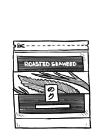

nori sheets
Nori is an edible species of red algea. It has a strong flavor, and is often used in dried sheets to wrap sushi. Dried sheets of seaweed are made by a shredding and rack-drying process that resembled papermaking. Nori sheets should be kept in an air-tight container because they can easily absorb water from the air.
nori
Nori is an edible species of red algea of the genus Pyropia in the family Bangiaceae. Nori can endure many stresses, including direct light, fluctuations in temperature and salinity and desiccation.